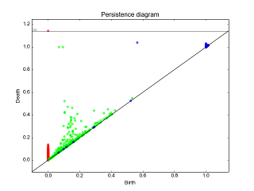
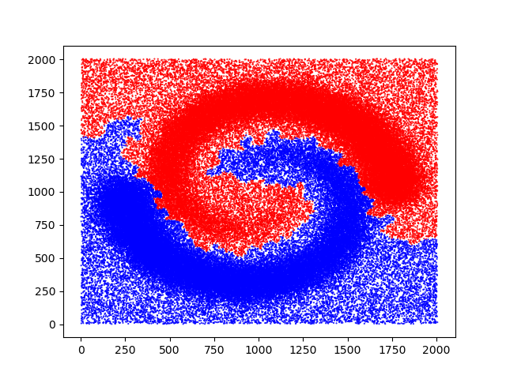
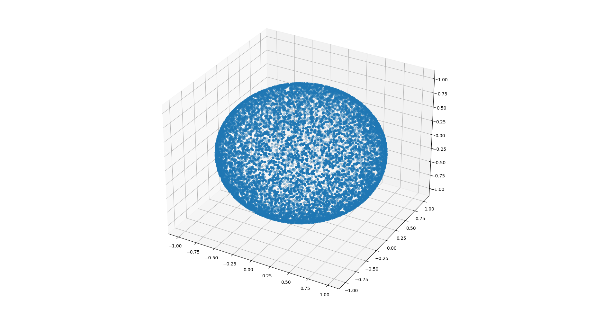

GUDHI Python modules documentation#

Data structures for cell complexes#
Cubical complexes#

Simplicial complexes#
Simplex tree#

Filtrations and reconstructions#
Delaunay complex#

Rips complex#

Edge collapse#

|
Edge collapse is able to reduce any flag filtration to a smaller flag filtration with the same persistence, using only the 1-skeleton of a simplicial complex. The reduction is exact and the persistent homology of the reduced sequence is identical to the persistent homology of the input sequence. The resulting method is simple and extremely efficient. Computation of edge collapse and persistent homology of a filtered flag complex via edge collapse as described in []. |
|
Witness complex#

|
Witness complex \(Wit(W,L)\) is a simplicial complex defined on two sets of points in \(\mathbb{R}^D\). The data structure is described in []. |
|
Cover complexes#

|
Mapper, Nerve and Graph Induced Complexes are cover complexes, i.e. simplicial complexes that provably contain topological information about the input data. They can be computed with a cover of the data, that comes e.g. from the preimages of a family of hypercubes covering the image of a continuous function defined on the data. |
|
|
||
Tangential complex#

|
A Tangential Delaunay complex is a simplicial complex designed to reconstruct a \(k\)-dimensional manifold embedded in \(d\)-dimensional Euclidean space. The input is a point sample coming from an unknown manifold. The running time depends only linearly on the extrinsic dimension \(d\) and exponentially on the intrinsic dimension \(k\). |
|
Topological descriptors computation#
Persistent cohomology#

|
The theory of homology consists in attaching to a topological space a sequence of (homology) groups, capturing global topological features like connected components, holes, cavities, etc. Persistent homology studies the evolution – birth, life and death – of these features when the topological space is changing. Computation of persistent cohomology using the algorithm of [] and [] and the Compressed Annotation Matrix implementation of []. |
|
Please refer to each data structure that contains persistence feature for reference: |
||
Topological descriptors tools#
Bottleneck distance#

Bottleneck distance is the length of the longest edge# |
Bottleneck distance measures the similarity between two persistence diagrams. It’s the shortest distance b for which there exists a perfect matching between the points of the two diagrams (+ all the diagonal points) such that any couple of matched points are at distance at most b, where the distance between points is the sup norm in \(\mathbb{R}^2\). |
|
Wasserstein distance#
|
|
The q-Wasserstein distance measures the similarity between two persistence diagrams using the sum of all edges lengths (instead of the maximum). It allows to define sophisticated objects such as barycenters of a family of persistence diagrams. |
|
Persistence representations#
Persistence graphical tools#
 |
These graphical tools comes on top of persistence results and allows the user to display easily persistence barcode, diagram or density. Note that these functions return the matplotlib axis, allowing for further modifications (title, aspect, etc.) |
|
Point cloud utilities#
\((x_1, x_2, \ldots, x_d)\)
\((y_1, y_2, \ldots, y_d)\)
|
Utilities to process point clouds: read from file, subsample, find neighbors, embed time series in higher dimension, estimate a density, etc. |
|
Clustering#
 |
Clustering tools. |
|
Datasets#
 |
Datasets either generated or fetched. |
|
LieDetect#

|
LieDetect is an algorithm for estimating the representation types of compact Lie groups from finite samples of their orbits. It is currently implemented for \(SO(2)\), \(T^d\), \(SO(3)\), and \(SU(2)\). |
|